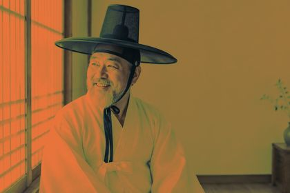
basebase
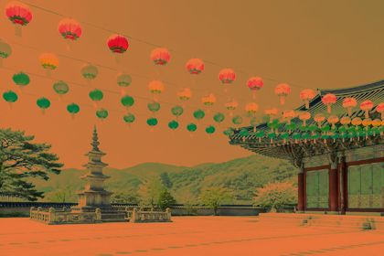
baseA blend mode combines the image (the base, A) with a blend layer (B). The layer can be a hex color, a NumPy array the same size as the image (a gradient, a texture, another photo) or anything that broadcasts to it. Every mode takes an optional opacity from 0 to 1. Below, all 14 modes blend #e8743b into the same three photos. Hover a result to see the base photo.Press and hold a result to see the base photo.
The unedited photos that every blend mode below is applied to.
The result is never lighter than the base. White is neutral.

base
base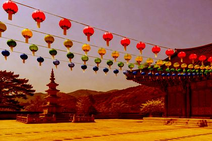
baseThe result is never darker than the base. Black is neutral.
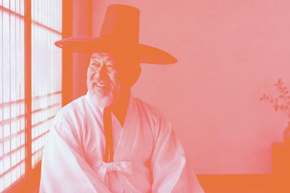
base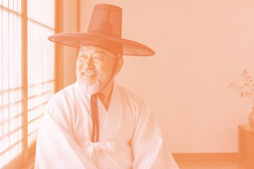
base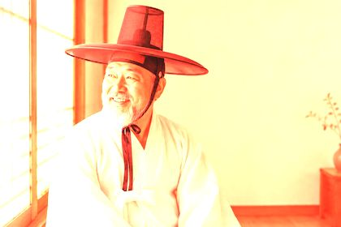
base base
base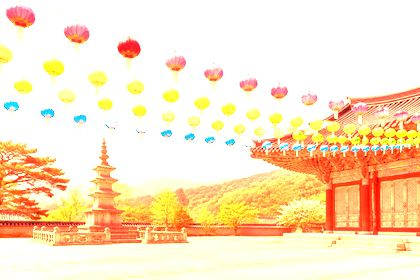
base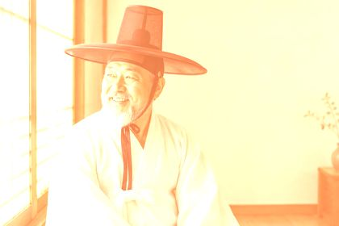
baseDarken below mid-gray, lighten above it. 50% gray is neutral for most of these modes.
 base
base base
base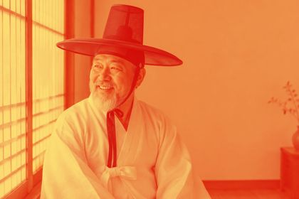
base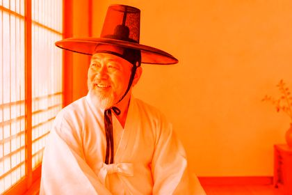
base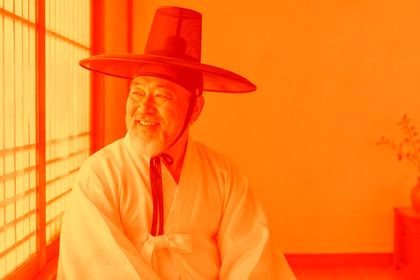
base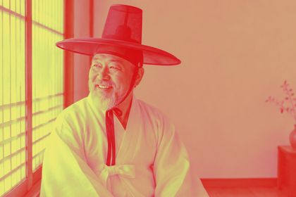
baseOpacity mixes the blended result back with the original: overlay("#ff4f8b", opacity=...) on the palace-pond photo.


The same mode gives very different moods depending on the color: soft_light(color) on the hanbok-portrait photo.


Pass a NumPy array instead of a hex string to blend per pixel. The creative effects examples use this for a vignette, a graduated filter and a double exposure.
h, w, _ = image.get_image_as_array().shape
t = np.linspace(0, 1, h)[:, np.newaxis, np.newaxis] # 0 at the top, 1 at the bottom
gradient = (1 - t) * np.array([1.0, 0.6, 0.3]) + t # orange fading to white
image.multiply(gradient) # white is neutral for multiply